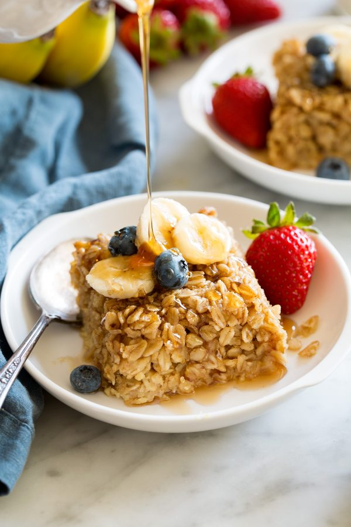

Baked Oatmeal

Ingredients
- 6 C Quick Oats
- 2 C Packed Brown Sugar
- 4 tsp Baking Powder
- 2 tsp Salt
- 2 tsp Ground Cinnamon
- 4 Large Eggs
- 2 C Milk
Directions
- Preheat oven to 350 degrees Fahrenheit.
- Grease a 9x13" pan, set aside.
- Combine all the dry ingredient and mix well.
- Combine wet ingredients to the dry mixture, mix thoroughly.
- Bake for 40-45 minutes, or until oatmeal is set.
- ENJOY!
For a vegan option for this delicious recipe check out this one by Yumna Jawad!
Contact Info
Email Me!
32 Campus Drive, Missoula, MT, 59812